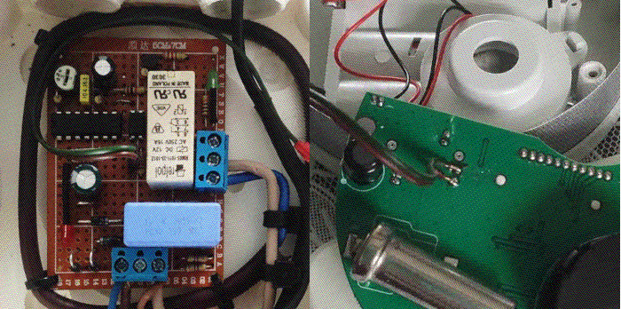
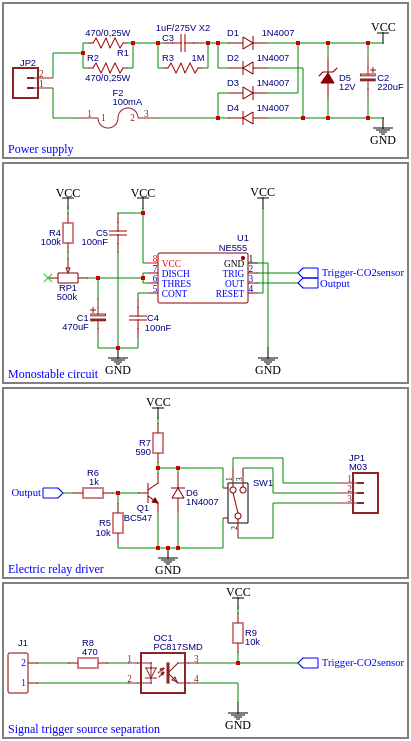

Fan controller for CO2 sensor
In today’s tech-driven world, we often assume that solving a problem requires a sophisticated programmable circuit or the latest microcontroller. However, this isn't always the case. Sometimes, the most effective solutions come from a simpler approach, one that leverages tried-and-true electronic components and a bit of creativity. With a few standard ICs, some components lying around the workshop, and a home-soldered PCB, it’s possible to create devices that are not only functional but also elegantly straightforward. This approach strips away the complexity and highlights the beauty of traditional electronics, reminding us that innovation doesn’t always require cutting-edge technology—just a bit of ingenuity and a steady soldering hand.
Disclaimer
This circuit involves high voltage and should only be handled by individuals with proper certifications. If you're not experienced in working with mains power, seek assistance from a certified professional.
Situation: problem of leaking exhaust gas
Recently, there was installed a new ecological heating system in my basement, which was supposed to offer both efficiency and environmental benefits. However, as the hot weather arrived, an unexpected problem emerged. The system was designed with a fixed-speed fan, and it lacked the capability to self-regulate based on the current temperature or gas levels. As a result, when the temperature rises, the fan fails to adjust accordingly, causing an accumulation of smoke in the fire chamber.
This issue is more than just a minor inconvenience. On particularly hot days, the smoke and CO2 buildup inside the fire chamber can become so significant that it starts leaking out when the door is opened, seeping into the living areas of the house. This poses a serious health risk, as CO2 is a harmful gas that can quickly create a dangerous environment.
To mitigate this, I installed a CO2 sensor near the basement exit, designed to alert us when gas levels begin to increase, indicating that the smoke is making its way toward the exit door. However, an alert alone is not sufficient to prevent the gases from escaping into the house. What was needed was a mechanism to extract the exhaust gases at the basement level before they could reach the living areas. Specifically, the fan needed to activate as soon as the CO2 sensor detected even a low level of gas, effectively ventilating the basement and keeping the air safe and clean.
Target: fan controller circuit
The goal of this project was to design and build a self-contained circuit capable of controlling an additional exhaust fan to address the smoke accumulation problem. This fan needed to pull out the excess smoke and fumes from the basement whenever the CO2 levels rose above a predetermined threshold, ensuring that the air remained safe and clean.
To achieve this, the circuit needed to be robust enough to handle the operation of a 230V powered fan. Importantly, it had to be self-contained, meaning it should not require any low-voltage power supplies like phone chargers or external transformers. The circuit would activate the fan only when necessary—specifically, when the CO2 sensor detected that levels had exceeded a safe limit. Once triggered, the fan would operate for a set amount of time, ensuring that the basement was properly ventilated before automatically shutting off.
This required the circuit to incorporate a timer that could be reliably triggered by the CO2 sensor output, and it also needed to include safety features to manage the high voltage directly from the mains. The end result would be a simple yet effective, self-contained solution to automatically manage air quality in the basement, preventing the buildup of hazardous fumes and providing peace of mind.

Actions: the circuit
To tackle the problem of smoke accumulation in the basement, I started by selecting an off-the-shelf CO2 gas detector. This detector is designed to handle the detection of dangerous gas levels and alert with both sound and lighting effects. The detector operates by producing impulses—blinking LEDs and driving a piezoelectric speaker—for as long as the fumes remain above the safety threshold.
I took advantage of the detector’s easy access to its LCD backlight terminals by wiring two cables to these points. This allowed me to capture the pulses generated whenever the sensor raises an alarm, which then serve as the trigger for the fan control circuit.
For the fan controller, I initially considered using an NE555 timer chip, but it was out of stock at the time. Instead, I opted for the CMOS version of the chip, which offers similar functionality but with a wider operating voltage range of 3V to 18V. This choice was particularly beneficial given the fluctuating nature of the transformerless power supply voltage, providing additional input voltage margin for the IC. I used this NE556 double timer to create a monostable circuit, adjustable via a potentiometer to control the duration of the output pulse. When triggered by the sensor's alarm, the monostable circuit outputs a pulse that enables a relay switch, which controls the fan powerd from mains voltage. This setup ensures that the fan runs for a specified amount of time, ventilating the basement adequately before automatically shutting off.
Ensuring the circuit remained self-contained without needing additional transformers or power adapters was crucial. To achieve this, I built a transformerless power supply that operates directly off the mains voltage. This simplified the circuit design but also meant that the entire system was on power line potential. Consequently, it was essential to isolate the CO2 sensor from the high-voltage components of the circuit.
To maintain this isolation and ensure safety, I incorporated a PC817 optocoupler (also known as a transoptor). The optocoupler provides galvanic isolation, allowing the CO2 sensor to trigger the fan control circuit without being exposed to the high voltage of the power supply. This setup ensures that the sensor remains protected while effectively managing the activation of the exhaust fan when dangerous gas levels are detected.
The final result is a straightforward, efficient, and fully self-contained solution that activates the exhaust fan only when necessary, maintaining safe air quality in the basement without requiring additional power supplies or complex circuitry.
Results
After designing the circuit, I began testing it on a breadboard to ensure that all components worked as expected. I carefully selected the time constant of the RC system in the monostable circuit, fine-tuning it to provide an optimal duration for the fan operation. Once I was satisfied with the performance on the breadboard, I moved on to building a prototype.
I assembled the prototype on a cheap Chinese PCB, which fit perfectly inside a small electric junction box. During the soldering process, especially when working with the high-voltage parts of the transformerless power supply, I took extra precautions to ensure safety and reliability. I maintained a significant amount of clearance between connections on the high-voltage side to prevent any potential short circuits. Additionally, I filed down all unused copper pads in the high-voltage region to enhance isolation and minimize the risk of accidental arcing or electrical faults.
Once the circuit was fully assembled and enclosed in the junction box, I tested it in the actual environment. The results were exactly what I had hoped for. The circuit performed its intended function flawlessly, activating the exhaust fan whenever the CO2 sensor detected elevated gas levels. This proved especially helpful during moments when I opened the basement doors for cleaning, as the circuit immediately engaged the fan to prevent any smoke or fumes from entering the living room above.
Overall, the circuit has proven to be a reliable and effective solution, ensuring that the air quality in the basement is maintained and that any hazardous gases are quickly vented outside. The careful design and attention to detail in the construction process have resulted in a durable, self-contained system that operates safely and efficiently.
